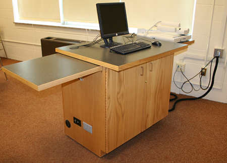

0000-000000
hello@edufair.com
123 abc street,edufair
hello@edufair.com
123 abc street,edufair

EduFair
Technology is a valuable tool that can improve student learning and help offset challenges created by larger classes. As such, the goal is to provide a technology-enriched learning environment in a cost-effective manner for IUP. The technology committees and staff have worked with faculty to identify and prioritize classrooms based on requirements desired and the nature of the facilities. These classrooms are then outfitted with a standard set of equipment which allows familiarity when moving from classroom to classroom. IUP currently has over 250 multimedia classrooms.  The use of multimedia in education helps in smartly managing teaching learning activities in the classroom. Multimedia use in classroom is more effective for students who learn through observing teaching process, as well as those who learn through listening. Multimedia is therefore able to meet the learning needs of all students. Use of multimedia is very important for students of different needs (regards to disabled students). In the classroom activities the students are also rich in information technology. As many as 24,342 secondary to higher level educational institutions in the country, involving around 2 million teachers and about 7.5 million students, are enjoying multimedia-based classroom facilities under the programme of A2i. Multimedia Classroom is a classroom that has the opportunity to manage teaching learning techniques (pedagogical process) through all the ICT based media. That is, the materials or equipments required to use all the media will be in this classroom. If there are electricity connection, Laptop/computer, Internet connection, projector, projector screen/white colour walls and sound system, then it can be called Multimedia Classroom. Teachers have to manage classes with respect to the content of multimedia functions. Multimedia content refers to where the teaching learning is enriched using audio, video, visual clips. There are many benefits of using the multimedia classrooms. Such as, In a very short time information can be presented to the students using many mediums. It is possible to meet the needs of learners of different learning needs in the same class. Using a multimedia content does not require the use of a lesson plan to take classes. The lessons can be presented in terms of reality. Abstract topics can be presented with realistic views. Difficult issues can be easily presented. The learning of the students in the classroom set up make a permanent impact. At the same time there are opportunities to use different teaching aids (materials). All students can be included with learning process. Teaching learning activities (classroom performance) runs with delightful attitudes. Variety of lessons can be brought to the students. There is a chance to show the same information repeatedly. The latest information and explanation can be presented in the classroom. The same materials can be used in different classes. International quality education can be ensured by using multimedia in the classroom properly. It is definitely a smart classroom arrangement to look at. To achieve learning outcomes from classroom performances students are getting outstanding opportunities through multimedia based classroom. The government of Bangladesh has provided multimedia equipments in educational institutions which have electricity connections. Some organisations have collected multimedia content on their own. Apart from this, the government initiative has provided training to 3 teachers per institutions on these multimedia classroom contents. Through the interaction with multimedia, the students become increasingly familiar with academic vocabulary and language structure. Connecting with the Internet will make the benefit of increased student motivation. Students are eager to begin class and often arrive early at the computer lab, logging on the Internet and beginning research on their own. They also often stay after class to continue working on the Internet. Overall, students develop greater confidence in their ability to use English because they need to interact with the Internet through reading and writing. Using multimedia provides the students to gather information through media that encourages their imaginations, interests. Also it using this technology combined with the sense of teaching will create a successful teaching method. In our imaginations, we enjoy and value all the benefits of education on-demand. We wish the future was here already because deep down inside, we all are lifelong learners. We just want learning to be easy, personalized. This vision is inviting, yet we must live and work in present time. And today, the reality stays apart from the dream. The challenge to educators is clear. We must also establish rigorous standards of quality in the products, services, and solutions we offer to our youth. We must learn how to prepare all of our students for lives that are becoming more and more complex. We must prepare our students to master change. Variations on the standard configuration may include pen- and/or touch-enabled displays, either via a Wacom display on the teaching station or SMART-style interactive projector or flat-panel mounted to the wall; additional display surfaces to improve visibility in awkward or oddly-shaped rooms; inclusion of a document camera to display physical documents and/or specialized software for various disciplines.